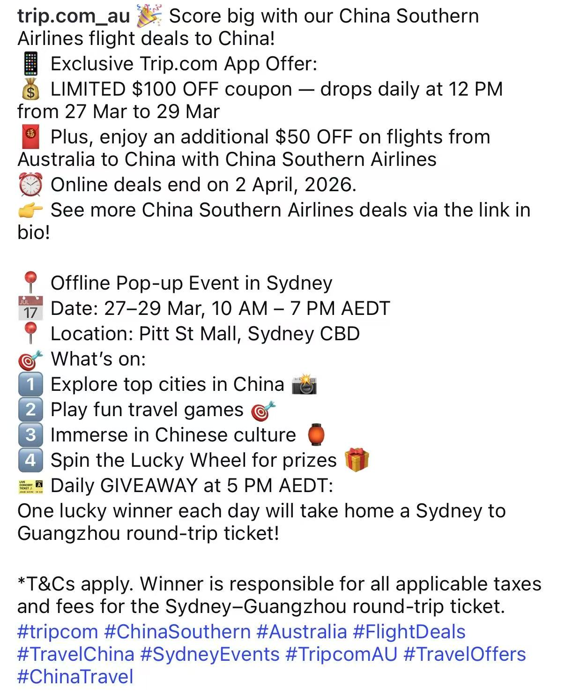

这件事要做什么，我负责哪一部分。
同一条航线，对澳洲华人和赴华游客的意义可能不同。官号内容需要兼顾航线信息、活动权益以及清晰的行动入口。
我的参与范围
参与合作推广，负责多平台官号内容撰写及发布。
查看具体职责
- 参与 TripAU × 南航悉尼入境游推广。
- 撰写并发布多平台官号内容，结合目标受众表达航线卖点和活动权益。
我怎么一步步参与。
- 01
认识受众
澳洲华人 · 赴华游客
- 02
整合信息
航线卖点 · 活动权益
- 03
形成内容
多平台官号文案
- 04
观察传播
曝光 · 触达 · Story 观看
根据简历中的职责整理为工作路径。
从业务信息，到可读的传播内容
WORKING DOCUMENT02
输入 / 航线
与赴华出行有关的航线信息
输入 / 权益
合作活动可提供的用户权益
表达 / 受众
在目标受众的语言与旅行语境中组织内容
承接 / 行动
让活动信息与下一步操作保持一致
职责结构示意 · 非原始业务材料
交付内容索引
- 多平台官号内容撰写
- 活动权益与航线卖点整合
- 官号发布与传播协作
这一站，悉尼。
线上有优惠，线下有得玩。
这里放两份活动宣传材料：中文截图先介绍悉尼快闪，英文官号内容先展开 App 优惠。切换看看，两种内容把哪些信息放在了前面。
SYDNEY / CHINESE COPY01
 长图 · 点开细看
长图 · 点开细看线下：3.27–3.29；线上：3.20–4.2。年份未在此图注明，按历史作品展示。
SYDNEY / ENGLISH COPY02


长图 · 点开细看截图活动：2026.03.27–29；线上优惠截至 2026.04.02。历史作品。
同一个活动场景，不同的信息顺序。
换个市场：欧洲赴华中文文案这两份材料能展示内容组织方式，不能据此判断哪一篇更有效。曝光、触达与 Story 观看为下方的合作活动整体成果。
结果摆在这里，口径也一起说明。
34万+FB / IG 曝光
18.8万+活动触达
7.42万IG Story 观看
数据为合作活动整体传播结果；个人职责为参与推广及官号内容撰写、发布。
本地化表达的起点，是理解受众
翻译背景与海外营销工作在这里产生连接：除了表达清楚信息，也需要考虑不同受众如何理解信息。提供的官号截图展示了多种优惠与活动信息的分区表达。
方法性表述依据项目职责整理。
看看真实文案与方法手记